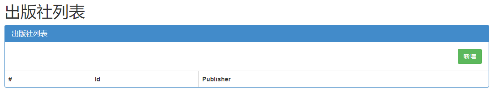
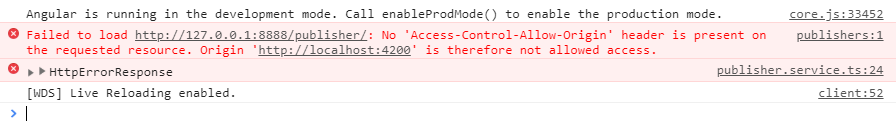
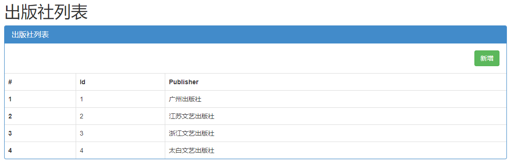

前端时间在公司的时候，要使用angular开发一个网站，因为angular很适合前后端分离，所以就做了一个简单的图书管理系统来模拟前后端分离。
但是在开发过程中遇见了同源策略的跨域问题，页面能够显示，但是却没有数据，显示如下

右键检查报错如下：

报错代码如下
Failed to load http://127.0.0.1:8888/publisher/:
No 'Access-Control-Allow-Origin' header is present on the requested resource.
Origin 'http://localhost:4200' is therefore not allowed access.
angular从后端获取数据的代码如下：
private publishersUrl = 'http://127.0.0.1:8888/publisher/';
private addpubUrl = 'http://127.0.0.1:8888/addpub/';
getPublishers (): Observable<Publisher[]> {
return this.http.get<Publisher[]>(this.publishersUrl)
.pipe(
catchError(this.handleError<Publisher[]>('getPublishers', []))
);
}出现这个问题的原因是同源策略的跨域问题，关于这个问题不在此处详细讨论，如有兴趣可以去搜索一下。
解决这个问题关键在于后端，要允许其他网站进行访问，在这里我们可以定义一个中间件来解决这个问题，步骤如下。
1.在app下新建一个myMiddleware.py文件。
2.在文件中加入以下代码
from django.utils.deprecation import MiddlewareMixin
class MyCore(MiddlewareMixin):
def process_response(self, request, response):
response['Access-Control-Allow-Origin'] = "*"
if request.method == "OPTIONS":
# 复杂请求 预检
response['Access-Control-Allow-Headers'] = "Content-Type"
response['Access-Control-Allow-Methods'] = "POST, DELETE, PUT"
return response3.去settings文件中注册中间件
MIDDLEWARE = [
'BMS.myMiddleware.MyCore',
]
至此，这个问题就算解决了，我们可以将项目运行起来看一下结果
